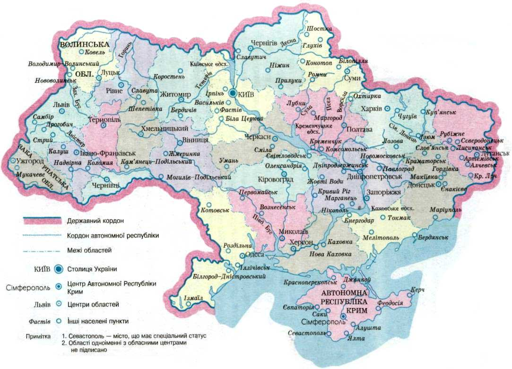
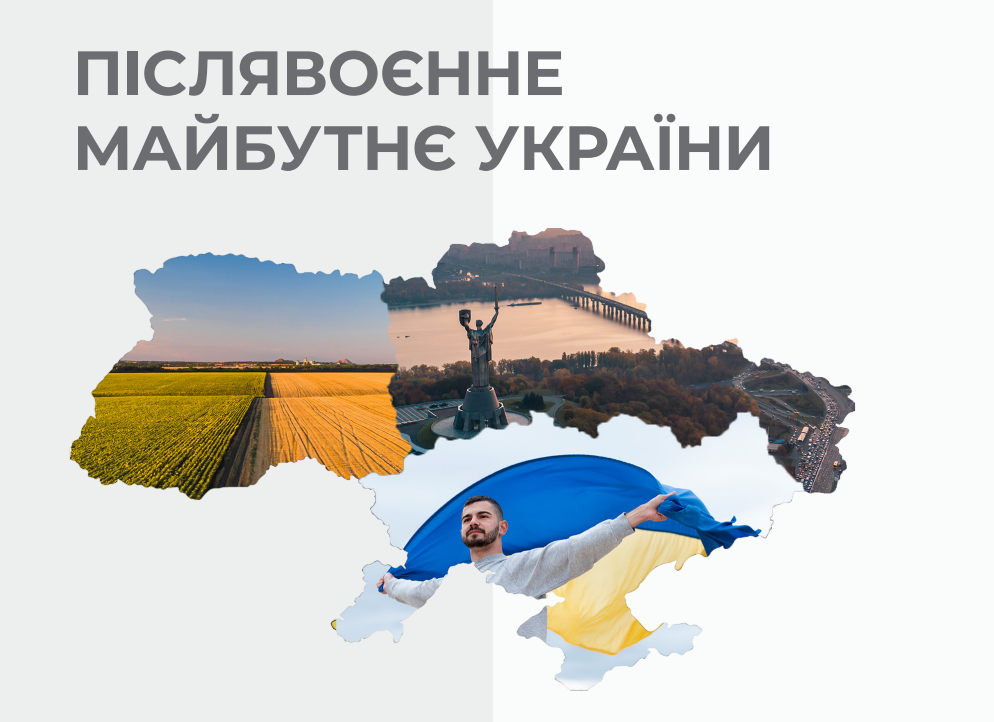

Україна — велика й багатогранна держава, розташована у самому центрі Східної Європи. Її географічне положення, культурна
спадщина та багаті природні ресурси зробили країну важливим гравцем у світовій політиці та економіці.

Географічне положення та природні багатства
Україна займає площу близько 603 тисяч квадратних кілометрів, що робить її найбільшою країною Європи за територією. Вона має вихід до Чорного та Азовського морів, а також межує з сімома державами, включно з Польщею, Румунією та Росією. Стратегічне розташування між Європою та Азією надає країні унікальну роль як транспортного та торговельного вузла.Природні ресурси України включають родючі землі, відомі як «чорноземи», які є одними з найкращих у світі для сільського господарства. Крім того, країна багата на поклади корисних копалин, таких як залізна руда, вугілля та газ.

Історичний контекст
Історія України сповнена боротьби за незалежність та суверенітет. Від Київської Русі — першої держави на території сучасної України, до складних відносин з сусідніми імперіями, такими як Османська, Австро-Угорська та Російська. ХХ століття стало особливо важким періодом для України. У складі Радянського Союзу країна пережила трагічні події, такі як Голодомор 1932–1933 років та Друга світова війна.У 1991 році після розпаду СРСР Україна здобула довгоочікувану незалежність. Проте на цьому виклики не закінчилися: країна стикнулася з політичними та економічними труднощами, а також з військовою агресією з боку Росії, яка розпочалася у 2014 році з анексії Криму та конфлікту на Донбасі.

Культурна спадщина
Українська культура надзвичайно багата й різноманітна. Народні традиції, мистецтво, музика та література віддзеркалюють унікальну ідентичність народу, яка формувалася протягом століть. Видатні діячі української культури, такі як Тарас Шевченко, Іван Франко, Леся Українка, внесли величезний вклад не тільки у розвиток національної культури, але й у світову літературну та інтелектуальну спадщину.Українська мова є однією з ключових складових ідентичності народу. Вона належить до східнослов’янської групи мов і має багатовікову історію. Незважаючи на численні утиски в різні періоди, українська мова продовжує активно розвиватися й поширюватися.

Економіка та сучасність
Україна володіє великим потенціалом для економічного розвитку завдяки своїм природним ресурсам, промисловому потенціалу та аграрному сектору. В останні десятиліття країна активно інтегрується у світову економіку, налагоджуючи зв'язки з ЄС та іншими міжнародними організаціями.Водночас країна стикається з серйозними внутрішніми проблемами, такими як корупція, низький рівень життя частини населення та військовий конфлікт на сході країни. Однак поступова політична й економічна реформи, підтримка з боку міжнародної спільноти та прагнення українців до європейського майбутнього дають надію на успішний розвиток у майбутньому.

Майбутнє України
Україна стоїть на роздоріжжі між минулим та майбутнім. Незважаючи на всі труднощі, країна зберігає віру в свої сили та прагне до миру, стабільності та процвітання. Молоде покоління українців активно долучається до глобальних процесів, зберігаючи при цьому свою національну ідентичність.Майбутнє України залежить від здатності народу подолати внутрішні проблеми та зовнішні виклики, зберігаючи незалежність, територіальну цілісність та демократію.
Україна — це країна зі славним минулим, складним сучасним і великим потенціалом для майбутнього.